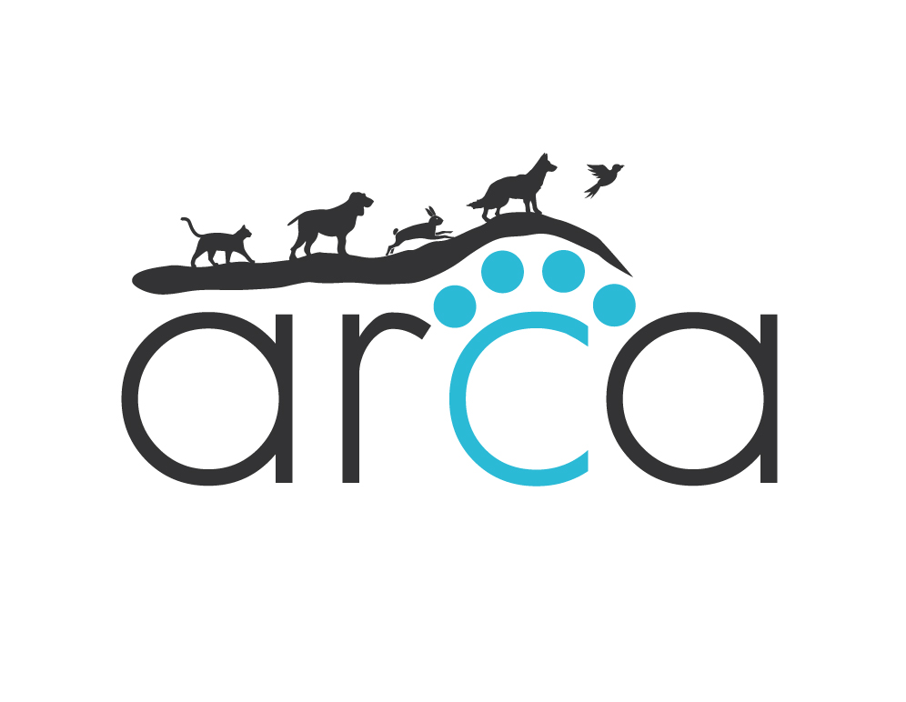
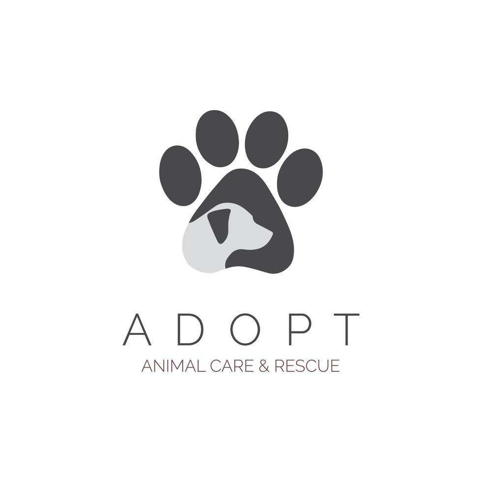
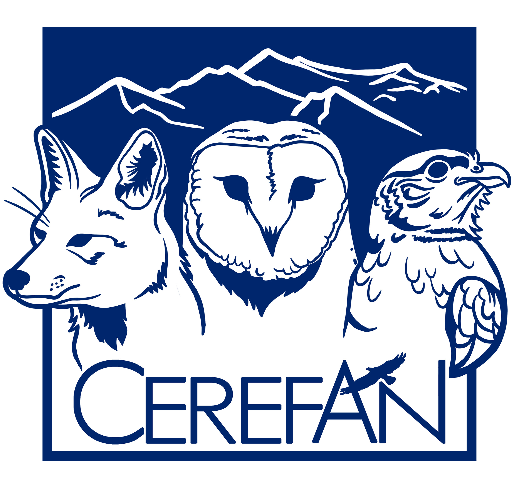

FUNDACIONES



×
Tu contribución nos ayuda a seguir rescatando y cuidando de perritos que han sido abandonados o maltratados. Cualquier donación, por pequeña que sea, es bienvenida y muy apreciada.
Puedes realizar una donación única o convertirte en un donante recurrente. Además, ofrecemos diferentes opciones para hacer tu donación: